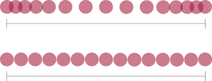

Easing, or also known as slow in and slow out, is changing the timing of an object. In physics, this is just called acceleration. acceleration can be negitive or positive. You can ease an object in or out. If you have a stationary object, and want to make it move accross the screen very fastly, you would ease it in. It's the trasition between the frames that the object is stationary, and the frames that the object is moving very fast.
Just like acceration, you can have fast and slow easing. A very fast ease in will have less frames between the stationary frames and the moving frames. Slower easing will mean more frames during the transiton. And as you learned on the timing page, more frames means slower timing. So the object will be very slow at first, then move faster and faster till it reaches it's max velocty. You can also apply the inverse to easing out. A object can be moving very fast, and then it gets slower, and slower, until it stops.
You can apply easing to you animations. What's happening when you add easing to a object, is that you are progressivly changing the timing of the object. Lets make a stationary ball ease in and out of motion. First, you have to have lots of frames close together. Those frames will progressivly get further and further apart. And once the ball is moving fast across the screen, you can start to ease it out. you make the far apart frames closer together. They get closer, and closer, until the ball looks like it stoped. Now yoy should have a very smooth motion.
